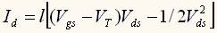
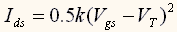
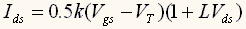
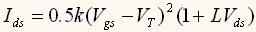
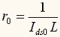
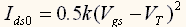
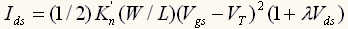
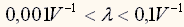

Порядок выполнение лабораторной работы
I. Общие пояснения.
1. Электростатические
свойства МОП полевого транзистора.
VT — пороговое смещение на затворе, необходимое для формирования канала (инверсионного слоя), Vg — напряжение, приложенное к затвору. QN — заряд инверсионного слоя: QN=-Cox(Vg-VT) для Vg>=VT, где Cox — емкость окисного слоя (подзатворного диэлектрика). В апплете, инверсионный n-канал формируется при превышении Vg над VT. Ширина инверсионного слоя составляет порядка 50 Aнгстрем. Программа показывает возрастание заряда инверсионного слоя при возрастании смещения на затворе.
Например, для VT=1V, смещение на затворе Vg>1V индуцирует n-канал. В программе используйте стрелочки около Vg для изменения смещения на затворе и наблюдения формирования n-канала.
Для p-канальной MOП структуры необходимо прикладывать смещение, противоположное тому, которое использовали для n-канальной MOП. Делается аналогично.
Нормально запертый n-MOП ПТ имеет положительное значение VT. При Vg=0V, Vg имеет менее положительное значение, чем VT и, поэтому, не происходит инверсии n-канала. Аналогично, нормально запертый p-MOП ПТ имеет отрицательное значение VT. Точное значение VT важно, поскольку контролирует условия (приложенное напряжение) включения прибора. Величина включающего смещения должна хорошо соответствовать характеристикам источника питания, имеющегося в цепи.
Пороговое напряжение МОП структуры зависит от физических свойств МОП структуры, таких как тип металла затвора, толщина окисла, концентрация легирующей примеси в канале (уровень легирования кремния). Пороговое напряжение зависит также от фиксированных зарядов, которые могут присутствовать в окисле между металлическим затвором и каналом.
2. МОП полевой транзистор в триодном режиме и режиме насыщения.
В МОП ПТ, носители заряда появляются из истока и перемещаются в сток. Общий переносимый заряд зависит от заряда, инжектированного из истока в канал, который, в свою очередь, контролируется смещением затвор-исток Vds. Ток стока может зависеть от падения потенциала между истоком и стоком. Во втором апплете МОП ПТ происходит визуальное моделирование характеристик МОП ПТ в зависимости от смещений исток-сток (Vgs), и затвор-сток (Vgd).
Во-первых, этот апплет демонстрирует, что свойства инверсионного канала вблизи истока управляется величиной Vgs, в то время как вблизи стока – величиной Vgd. Для n-канального МОП ПТ, область инверсии образуется в истоковом конце канала, когда Vgs>VT, и в стоковом конце канала если Vgd>VT. Для управления, используйте стрелочки возле рамок с обозначениями значков Vgs и Vgd и наблюдайте как n-канал контролируется на концах канала этими двумя напряжениями соответственно.
n-MOП ПТ
(1) Триодный режим работы. Если Vgs>VT и Vgd>VT, тогда n-инверсионная область протяжна непрерывно вдоль всего канала от И к С. Т.е. И и С соединены проводящим каналом, который имеет некоторое сопротивление. Ток стока возрастает при возрастании напряжения между И и С. Сопротивление канала зависит от величины заряда, инжектированного в канал со стороны истока, который, в свою очередь, контролируется напряжением Vgs. Ток стока Id зависит как от Vgs так и от Vgd (или Vds), и, таким образом, этот прибор работает как триод.
(2) Насыщение. Если Vgs>VT и Vgd<VT, то в этом случае появляется (индуцируется) n-слой на истоковом конце канала, однако канал обеднен на стоковом конце. Таким образом, n-канал сужается на своем стоковом конце вплоть до его перекрытия. Что будет происходить с электронами, инжектированными из истока?. После перекрытия канала в области стока, ток больше почти не зависит от напряжения между И и С (на самом деле существует слабая зависимость Id от Vds). Почему? Как называется этот эффект?
(3) Режим отсечки. Если Vgs<VT и Vgd<VT, тогда n-канал отсутствует и ток не протекает.
p-MOП ПТ
Все вышеизложенное справедливо и для p-канального МОП транзистора за исключением противоположных соотношений между Vgs (и Vgd) и VT.
3. Выходные характеристики МОП полевых транзисторов.
n-MOSFET
(1) Триод
Для Vgs>VT и Vds<VdSHSH=Vgs-VT (или, что эквивалентно, Vgd>VT), канал непрерывен по всей своей длине от И к С. Поэтому n-канал является проводником (или резистором), проводимость (сопротивление) которого пропорционально количеству электронов, индуцированных на истоковом конце канала (и, таким образом, инжектированных из истока в канал). Ток носителей в канале (или ток стока) определяется как:
.
(2) Насыщение
При Vds=VdSHSH, где VdSHSH определяется из условия Vds-VT, канал в области стока сужается до перекрытия. После достижения этого напряжения, т.е., Vds>VdSHSH, канал больше не является резистором. Здесь имеется в виду, что ток Idне зависит от приложенного напряжения Vds. Ток в основном определяется тем, насколько много носителей втекает в истоковый конец канала. Ток насыщения истока можно определить как:
.
Увеличение Vds при постоянном значении Vgs не приводит к возрастанию тока стока. На конце канала в области сужения (перекрытия) все носители переносятся в сток электрическим полем.
Реально, ток стока Idsнемного возрастает при возрастании Vds. Это связано с тем, что при возрастании Vds уменьшается длина канала (попробуйте изменить Vds в апплете и наблюдайте изменение длины канала). Этот эффект называют модуляцией длины канала. Математически, модуляция длины канала приводит к появлению в выражении для Ids дополнительной части, зависимой от Vds
,
где L — малое число.
(3) Параметры цепи при моделировании MOП ПТ
Входное сопротивление: Электрически изолирующий слой подзатворного диоксида кремния препятствует току носителей от металлического затвора в стоковую область. В схеме с общим истоком и затвором во входной цепи, входное сопротивление бесконечно (в идеальном случае). Входной ток (ток затвора Id) равен нулю вне зависимости от величины входного напряжения (напряжения затвор-исток Vgs).
Выходное сопротивление: В модели малосигнальной эквивалентной схемы параметры выходного сопротивления в конфигурации с общим истоком рассчитывается следующим образом. Напряжение между стоком и истоком Vds таково, что MOП ПТ находится в режиме насыщения. Переменная составляющая выходного напряжения является малой вариацией Vds вокруг постоянной составляющей (относительно рабочей точки). При варьировании Vds, ток стока Id (или Ids, буква "s" обозначает «насыщение(saturation)») изменяется лишь слегка благодаря модуляции длины канала. Вариации величины Ids есть переменный выходной ток, и его отношение к переменному выходному напряжению равно выходному сопротивлению. Модуляция длины канала может быть выражена как:
,
а выходное сопротивление есть:
, где .
(4) Параметры моделирования MOП ПТ: Уровень 1: Модель постоянного тока
LAMBDA GAMMA PHI VT0 KP LD L Leff
n-канальный КМОП Уровень 1 SPICE Модельные параметры
| Level 1 SPICE Parameter |
n-channel MOSFET |
p-channel MOSFET |
Units |
| Gate oxide thickness TOX |
150 |
150 |
Angstrom |
| Transconductance Parameter KP |
50 x 10-6 |
25 x 10-6 |
Amp/V2 |
| Threshold Voltage VT0 |
1.0 |
-1.0 |
Volts |
| Channel-length modulation parameter LAMBDA |
0.1/L L in micron |
0.1/L L in micron |
V-1 |
| Bulk Threshold Parameter GAMMA |
0.6 |
0.6 |
V1/2 |
| Surface Potential PHI |
0.8 |
0.8 |
V |
| Gate-drain overlap capacitance CGDO |
5 x 10-10 |
5 x 10-10 |
F/m |
| Gate-source overlap capacitance CGSO |
5 x 10-10 |
5 x 10-10 |
F/m |
Zero-bias planar bulk depletion
capacitance CJ |
10-4 |
3 x 10-4 |
F/m2 |
Zero-bias sidewall bulk
depletion capacitance CJSW |
5 x 10-10 |
3.5 x 10-10 |
F/m |
| Bulk junction potential PB |
0.95 |
0.95 |
V |
Planar bulk junction
grading coefficient MJ |
0.5 |
0.5 |
None |
Sidewall bulk junction
grading coefficient MJSW |
0.33 |
0.33 |
None |
Визуально: увеличение заряда в инверсионном слое с возрастанием смещения на затворе иллюстрируется увеличением толщины n-канала (голубая область) (или толщины p-канала — красная область). Однако это сделано только для лучшей визуализации и не означает, что толщина инверсионного слоя возрастает линейно с увеличением приложенного к затвору напряжения.
Носители заряда (электроны) в стоковой области перекрытия канала (n-канала): Увеличение Vds выше Vdasat, или эквивалентно уменьшение Vgd ниже VT, создает полностью обедненную область между инверсионным каналом и областью стока. В этом месте устанавливается электрическое поле, направленное от стока к инверсионному каналу. Носители заряда (электроны) в n-канале, которые достигают границы обедненной области пролетают через обедненную область и всасываются в область стока. Этот эффект похож на p-n переход диода, где неосновные носители заряда (электроны в p-полупроводнике) пролетают в n-полупроводник под действием внутреннего поля p-n перехода, как только достигают граница обедненной области (дрейфовая составляющая тока).
Модуляция длины канала: Область канала, граничащая со стоком, перекрывается при Vgd=VT, или эквивалентно, при Vds=Vdshsh=Vgs-VT. Для n-канала MOП ПТ, при возрастании Vds таким образом, что Vds>Vdssat(или убывании Vgd, чтобы Vgd<VT), длина инверсионного канала (т.е., голубая область инверсионного канала в апплете) быстро сокращается. Поскольку сопротивление резистора пропорционально длине канала, то сопротивление канала уменьшается. Это приводит к слабому возрастанию тока стока ВАХ на участке насыщения.

в этом выражении λ называется параметром модуляции длины канала и k=Kn'(W/L). Здесь W — ширина а L — длина канала. Типичный интервал изменения λ:

В области насыщения, попытайтесь изменять значения Vgd или Vds, и наблюдайте вариацию длины канала и (слабое) возрастание/убывание тока стока. В настоящем апплете, изменение длины канала в точности не соответствует величине Vds (или Vgd).
Задание по лабораторной работе
- Электростатические свойства МОП полевого транзистора.
N-канал
Приготовление: Выберите N-канал и установите VT=2V. Нажмите Vg UP или DOWN и наблюдайте область канала МОП ПТ.
Определите минимальное значение напряжения на затворе Vg, необходимое для формирования канала. Vg=( )Volts
Каково соотношение Vg и VT для формирования N-канала? Зависимость Vg от VT:( )
Выберите, что для N-канального MOП ПТ является правильным:
- Si подложка: N-тип или P-тип?
- Области Истока и Стока: N-тип или P-тип?
- Носителями заряда в канале являются: электроны или дырки?
Приготовление: Выберите VT=-2V. Нажмите Vg UP или DOWN и наблюдайте область канала МОП ПТ.
Определите максимальное значение напряжения на затворе Vg, необходимое для формирования канала? То есть какое минимальное значение напряжения на затворе необходимо для удаления проводящего канала? Vg=( )Volts
Каково соотношение Vg и VT для формирования P -канала?
Зависимость Vg от VT: ( ).
Выберите, что для P-канального MOП ПТ является правильным:
- Si подложка: N-тип или P-тип?
- Области Истока и Стока: N-тип или P-тип?
Носителями заряда в канале являются: электроны или дырки?
- МОП полевой транзистор в триодном режиме и режиме насыщения.
Введение: Этот апплет показывает вид области канала в зависимости от смещения Затвор-Исток, Vgs, и смещения Сток-Затвор, Vgd. Кривые в апплете показывают Id(Vds) — зависимость тока Стока от смещения между Стоком и Истоком при всех условиях смещения; а также Id(Vgs) — зависимость тока Стока от смещения Затвор-Исток, когда МОП ПТ находится в режиме Насыщения. Красная точка показывает текущие условия смещения.
N-канал
Приготовление: Выбрать N-канал, VT=1.5V . Используйте стрелочки Up и Down для изменения Vgs и Vgd. Установите Vgd=0V
Измените Vgsи найдите при какой величине Vgs в области Истока появляется канал (инверсия)? Vgs=( )Volts
Отсюда, какова зависимость Vgs от VT для появления N-канала в области Истока? Зависимость Vgs от VT: ( )
Теперь, изменяйте Vgd и найдите то его значение, при котором канал становится протяженным (непрерывным) от Истока к Стоку. Vgd=( )Volts.
Найдите зависимость Vgd как функции от VT для N-канала. Протяженный канал (триод): Vgd как функция VT: ( ).
Перекрытие канала происходит в области Стока (режим насыщения): Vgd как функция VT:( )
Наблюдайте локализацию красной точки на кривой Id-Vds. Красная точка показывает текущие условия смещения Vgs и Vgd, приложенные к MOП ПТ.
Измените типа канала. Как это повлияет на работу? На приложенные напряжения?
- Выходные характеристики МОП полевых транзисторов.
Цель работы:
(a) Повторить изучение канала (триод/насыщение) с использованием Vds вместо Vgd.
(b) Проверить эквивалентность условий: (1.II) Vgd в зависимости от VT и (1.III) Vgs в зависимости от Vt.
N-канал
Приготовление: Выбрать N-канал, VT=1.5V. Используйте стрелочки Up и Down для изменения Vgs и Vgd. Установите Vds=0V
Измените Vgs и найдите при какой его величине в области Истока появляется канал (инверсия). Vgы= ( )Volts.
Отсюда определите, какова зависимость Vgs от VT для появления N-канала в области Истока? Зависимость Vgs от VT: ( )
Теперь установите Vgs=3.5V, и изменяйте Vds для поиска его значения, при котором происходит перекрытие канала в области Стока и проверьте эквивалентно ли это значение Vgs-VT: Vds=( )Volts.
Найдите зависимость для Vds в зависимости от Vgs-VT для N-канала.
Протяженный канал (триод): Vds как функция Vgs-VT( )
Перекрытие канала происходит в области Стока: (режим насыщения): Vds как функция Vgs-VT( )
Наблюдайте локализацию красной точки на кривой Id-Vds. Красная точка показывает текущие условия смещения Vgs и Vgd, приложенные к MOП ПТ.
Эквивалентность условий и проверка апплетом в терминах Vgd и Vds:
Показать, что условия, которые вы нашли, эквивалентны триодному режиму, если работать с зависимостью Vds от Vgs-VT или с зависимостью Vgd от VT. Докажите, что то же самое справедливо и в случае режима насыщения _ _ _ _ _ _ _ _ _ _ _ _ _ _ _ _ _ _ _ _ _ _ _ _ _ _ _ _ _ _ _ _ _ _
Проверка апплетом: Проверьте эту эквивалентность с использованием апплетов (работы (2) и (3)): Триод/Насыщение с использованием Vds <=> Триод/Насыщение с использованием Vgs.
Измените типа канала. Как это повлияет на работу? На приложенные напряжения?
Контрольные вопросы
Почему свойства и характеристики полевого транзистора следует описывать системой уравнений, в которых токи являются функциями напряжений?
На какую область инверсионного канала наиболее влияет приложенное напряжение Исток?Затвор? Сток-Затвор?
В чем заключается разница в работе транзистора при изменении типа проводимости подложки (и, соответственно, областей истока и стока)?
В режиме насыщения, когда Vgs>VT и VgdT, появляется (индуцируется) n-слой на истоковом конце канала, однако канал обеднен на стоковом конце. Таким образом, n-канал сужается на своем стоковом конце вплоть до его перекрытия. Что будет происходить с электронами, инжектированными из истока? После перекрытия канала в области стока, ток больше почти не зависит от напряжения между И и С (на самом деле существует слабая зависимость Id от Vds). Почему? Как называется этот эффект?
|